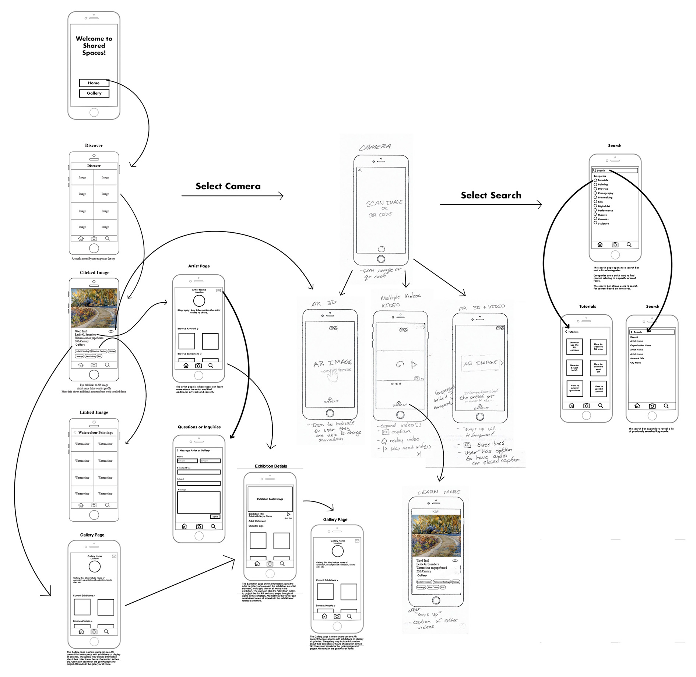
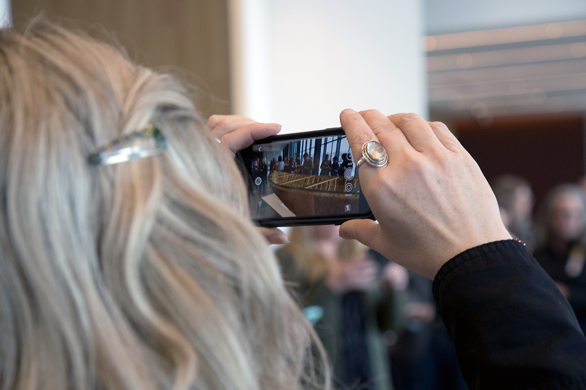

Shared Spaces
Enhancing art experiences through AR for Saskatchewan residents.
As part of a user engagement team for connecting Saskatchewan residents with art, I solved challenges with innovative technological solutions. My responsibilities included conducting research, gathering patron feedback, and creating visualizations such as personas, service blueprints, journey maps, storyboards, sitemaps, wireframes, and prototypes. I also participated in hackathons, explored Augmented Reality designs, addressed technical issues encountered during development, redesigned problematic features, composed the brand identity of our product, and presented this app at conferences with confidence and clarity.
Project Overview
The University of Saskatchewan Art Galleries & Collections embarked upon a three-year initiative to enhance the accessibility and enjoyment of art for everyone. This project aimed to explore Augmented Reality to develop connections to art, thereby making art appreciation more inclusive and accessible to a broader audience, regardless of their location. The project aspires to provide users with relevent content by involving collaboration with local communities throughout Saskatchewan to gain insight into their distinct requirements and preferences concerning art. Our objective was to eliminate the obstacles that hinder individuals from engaging with exceptional works of art, whether they are enthusiasts or artists themselves. The Shared Spaces application offers an intuitive interface for users to add, discover, and interact with art pieces in Augmented Reality. As well, the project enables galleries and art institutions to display their exhibitions. By harnessing the power of technology, we bring art directly to users' fingertips, no matter where they may be, and give them a fresh perspective on the world of art.
Problem
The University of Saskatchewan Art Galleries & Collections wants to make art appreciation more inclusive and accessible to a broader audience, regardless of their location. They also want to provide users with personally resonant content and eliminate the obstacles that hinder individuals from engaging with exceptional works of art.
Solution
We will develop an augmented reality application that enables users to engage with art pieces in their surroundings. This project will incorporate user-centered and service design approaches by collaborating closely with local Saskatchewan communities to ensure the app meets their unique needs and preferences regarding art.
My Role
Part of the User Engagment Team: UX Researcher, Visual Designer, Interaction Designer, AR Designer and Tester.
Responsibilities
Competitive Audit, Research, User Interviews, Personas, Storyboard and Journey Map, Paper and Digital Wireframing, Sitemaps, Usability Testing, Style Tile, Style Mock Up and Low Fidelity Prototyping.
Part 1: User Research
User research was conducted through various methods including a competitive audit, community consultations, affinity diagramming, and persona development. This research revealed valuable insights into the needs and pain points of artists and arts administrators in Saskatchewan, including time, distance, and financial constraints. Personas were created to help communicate these findings and inform the design of tailored solutions.
Competitive Audit
An examination of several rival offerings yielded valuable insights into areas of differentiation and potential improvement for our Shared Spaces product, thereby providing strategic guidance for its development.
Community Consultations
We collaborated with local arts organizations and artists in seven communities across Saskatchewan to host consultation workshops in:
- Estevan (Estevan Art Gallery & Museum)
- La Ronge (La Ronge Arts Council)
- Little Pine First Nation (Janelle Pewapsconias)
- North Battleford (Chapel Gallery)
- Regina (MacKenzie Art Gallery)
- Saskatoon (Remai Modern)
- Yorkton (The Godfrey Dean Art Gallery)
During the two-hour workshops, participants completed worksheets independently before discussing their answers in groups, allowing for both personal reflection and shared insights. The worksheets covered topics such as positive arts-related experiences, negative encounters, and identifying current obstacles and potential solutions.
For instance, one of the participants, a father enjoyed a museum tour in France with his daughter and valued the shared experience, but now regrets not being able to continue exploring art together due to their physical separation. His desire to continue this connection highlights the importance of personal relationships in enriching one's engagement with art.
Affinity Diagramming
We employed affinity diagramming to examine the qualitative data gathered from one-on-one interviews with 101 artists and arts administrators in Saskatchewan, revealing several recurring themes that highlight the difficulties faced by arts professionals in the region. The most commonly cited challenges included time, distance, and financial constraints. These valuable insights can guide the development of targeted support programs to address these issues and promote the growth of the arts sector in Saskatchewan.
Personas
The use of affinity diagramming allowed for the creation of five distinct personas that capture typical user behaviors and preferences, providing a useful tool for communicating research findings to designers. These personas were fleshed out with detailed characteristics and quotes from study participants, enabling designers to better understand and empathize with users' needs and design tailored solutions.
Part 2: Design Development
The User Engagement team created service blueprints for five personas to understand their interactions with the Shared Spaces service. These service blueprints helped identify key touchpoints, desired behaviors, and functionalities. Additionally, the team utilized sitemaps to organize the app's information and improve user navigation by shortening pathways and emphasizing lateral movement between categories, ultimately enhancing the user experience.
Storyboards and Journey maps
A service blueprint is a visual representation that illustrates the various touchpoints and delivery channels involved in providing a service, enabling designers to examine the service from a detailed and high-level perspective. The User Engagement team created service blueprints for five personas to understand their interactions with the Shared Spaces service. We identified four distinct journey maps and storyboards and gained insights into the necessary touchpoints, desired behaviors, and overall service functionality.
I created a journey map and storyboard for Violet, one of our key personas, to understand her emotional state and pain points during the decision-making process. These visualizations helped us identify new pathways and consolidate similar journeys, resulting in valuable insights for designing a better user experience tailored to Violet's needs.
Violet's Storyboard
Violet's Journey Map
Sitemaps
Sitemaps
A sitemap is a visual representation of a website's organization and structure, similar to a series of nested folders on a desktop. It is a useful tool for visualizing and refining a site's structural design, or information architecture. It can also help designers consider a user's available pathways to desired information and make them more intuitive or shorter. We used sitemaps to organize the apps information and focus on providing an opportunity for users to view artwork in AR space. We focused on shortening pathways and emphasizing lateral movement between categories.

Part 3: Wireframes and Low-Fidelity Prototype
We each developed a wireframe for a persona, taking into account the persona's anticipated interaction path with the service and their level of technological proficiency. After iterating on these wireframes for a month, we merged them into a single wireframe that now acts as the foundation for both the application's programming and user interface design. A functional clickable prototype was built utilizing the Pop app by Marvel.
Sketches
Sketching is an essential step in wireframing that enables designers to rapidly investigate various layout possibilities and envision a product or interface's fundamental framework. Through quick sketches, designers can concentrate on the overall flow and organization of the design without being distracted by specifics. I had a fast brainstorming session to develop ideas for the main interfaces of the program, using our earlier research as a basis and focusing on the process of finding desired objects.
Wireframes
After brainstorming and creating rough wireframe sketches on paper, I proceeded to develop the first visual representations of the app. My primary focus was on crafting an intuitive user experience that would provide tailored guidance to help users explore their interests with ease. Following that, I linked the various screen layouts together by utilizing our previously established site map.
Wireframe With Sitemap
Clickable Prototype
Part 4: Usability Testing
The feedback from subsequent workshops confirmed that Shared Spaces should focus on Augmented Reality to facilitate art sharing. Users were particularly engaged by 3D content, emphasizing the importance of prioritizing this feature in the platform's design. Participants also expressed interest in additional content, such as artist interviews and educational materials, to enhance their AR art experiences. We also tested early versions and prototypes with participants to gather feedback and ensure that the platform met their needs and expectations.
The team developed three user tests for our clickable wireframe to go with specific goals to ensure that the pathways to desired content were intuitive and easy to navigate. Pathways should take no more than 1-2 minutes each. The user tests were as follows:
- View Zachari Logan's artwork Cut Flowers.
- View Ruth Cuthand's exhibition Artist in Focus, which was shown at Remai Modern.
- Load the audio for Edward Poitras' artwork Cell.
The user testing revealed some areas for improvement in the platform's navigation and user experience, although users were able to complete tasks accurately and reported high levels of satisfaction. The navigation menu was found to be confusing, leading to difficulties in finding necessary content. However, the platform's idea, intuitive design, and helpful features were praised by users.
Part 5: Style Mockups
Our team was responsible for crafting the User Interface (UI) and visual identity of the Shared Spaces app. To begin, we conducted research on existing apps in the same category, drawing inspiration from their designs and compiling mood boards to convey our vision. We then set out to create UI designs for select screen mockups, continually refining and perfecting them over the course of several weeks. This process led us to settle on a clean, minimalistic aesthetic featuring predominantly white and off-white backgrounds, placing the focus squarely on the artwork itself – much like one would find in an actual art gallery.
Version 1
Version 2
Version 3
Part 6: Sharing Our App At A Conference
At the Ten Digit Technology Conference, the Shared Spaces project team presented their project's design process and direction, and demonstrated two AR experiences that enabled the sharing of a high-fidelity digital 3D sculpture and the addition of personal and scientific content to artworks through AR. This provided valuable opportunities for feedback and increased awareness of the project on a national level.
First Experience
For the first experiences, we displayed a highly detailed 3D printed replica of a historic wooden canoe. The canoe was created using cutting-edge scanning technology to capture the exact shape and details of the original canoe built by Mr. Isaiah Roberts and his wife. This original was displayed alongside the replica for comparison.
View The 3D Model
Simply scan the QR code below using the Augment app. Once you've scanned the code, point your phone's camera at a flat surface and tap the green square. This will bring up a 3D model of the canoe in 1.5' scale.
Seccond Experience
The seccond experience was works done by the artist Ruth Cuthand. The trigger images are printed onto takeaway cards. One features a beaded small pox virus that, when scanned, brings up an animated video interview with Ruth discussing her motivation behind the work. The other card image is a beaded Hepatitis C virus that, when scanned, brings up an animated 3D model of the virus. The AR content can be viewed using the Artivive app.
The prototypes for the Shared Spaces service were successful in showcasing the potential for collaborative art experiences. They garnered positive feedback from users, indicating future possibilities for expansion and partnerships. User testing also provided valuable insights into user engagement and helped refine the service's design and direction.
Finished Product
To immerse yourself in an innovative artistic experience, download the Shared Spaces application on your iOS or Android device and experience artworks in augmented reality.
Launch and Impact
Our app, launched at Nuit Blanche Eve 2020, revolutionized the event by introducing augmented reality (AR) technology, allowing visitors to interact with digital artworks superimposed onto real-world spaces. The app enabled users to explore the University of Saskatchewan campus in a new way, discovering hidden artworks and interactive installations. It also provided artist statements and information, fostering a deeper understanding and appreciation of the artwork. Users could share their favorites works on social media. The app opened up opportunities for continued innovation.
As a designer of our app, I am thrilled to see the positive impact it has had on the art community and the excitement it continues to generate. The app has been used twice by the organization, Nuit Blanche Eve, and has proven to fill a gap in the market, providing an innovative platform for artists to showcase their work and engage audiences in a new way. Its success has also inspired new collaborations and applications in other events and exhibitions, paving the way for the app to shape the future of the art world.
What I Learned
Throughout the entire design process, I acquired a deeper appreciation for the obstacles and intricacies involved in crafting an augmented reality art app that is both user-friendly and easily accessible. I realized the significance of conducting research on users and testing, as well as incorporating feedback from them to guide the design process. Moreover, I recognized the value of considering accessibility and sitemaps, ensuring that the service can be readily used by a diverse array of users in varying locations.
Tweaking Designs for the Shared Space App
As part of the Shared Space design team, I created a prototype app layout for my persona Violet. Violet represented young emerging artists who are trying to make connections in the art world. In the app design, the layout was minimalistic, the pages were easily connected, and features like Explore, Profile and Messages helped people like Violet find like-minded individuals.
During the process of creating this design, journey maps and blueprints were drawn out to theorise how Violet would come to find out about the app and use it. This facilitated a more in-depth look at how individuals would move through the app and what features they would be drawn to. Our design team came together to compile the different designs, picking the most effective features to create a more robust app that would have all our personas in mind. This was one of the most challenging aspects of the project. There were so many well thought out ideas that needed to be narrowed down to one precise plan. Each week we would meet to present, discuss and improve our design. Individually, we created mood boards to visually present colours, fonts, icons and patterns that could be worked into the app. Many different versions of style mock ups were presented and each week the designs would be modified and narrowed down. A clickable prototype was made to simulate a real user experience.
Finally, each individual in the team presented their own final design and a favourite design from another team member that they had copied and refined. It was very rewarding to see the difference between prototype one which was a rough drawing and the sleek, sophisticated presentation of the final prototype. Throughout this process, honest and critical team feedback was what I appreciated the most. It was always a nice surprise when another team member would incorporate something they saw in your design into their own.
These designs were further developed, coded and brought into the reality of an app. This is an exciting tool for the arts community and I am proud to have played a part in its creation.
- Caila Robson-Kullman